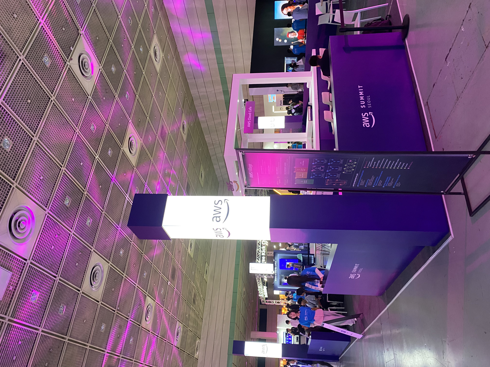
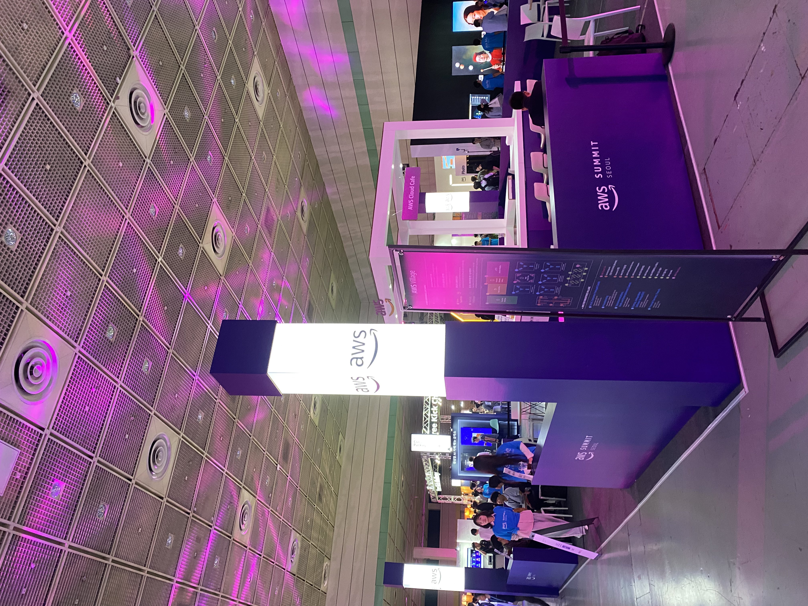

Road to AGI
🚀 Welcome to my GenAI Journey!
Artificial Intelligence is the new electricity.
👽 About Me
Solutions Architect - Generative AI Engineer (Master's Degree in Computer Science)
 


👩🏽🚀 Projects
[1] Multimodal RAG Avatar Service for Prompthon with Microsoft Korea and MegazoneCloud AI Accelerator Program - Implemented RAG pipeline using semantic chunking and OCR with Azure Document Intelligence, Azure TTS Avatar, Azure AI Studio - Fine-tuned open-sourced models like phi-3 mini in Microsoft AI toolkit and MaaS using Conda and NVIDIA GPU.
[2] Biz Chatbot Service Development (MegaChat Enterprise) - Developed chatbot using LangChain and function calling to connect with database of MegazoneCloud’s meeting room/café system. - Implemented with Azure OpenAI, GPT-4 model, Azure AI Search for indexing and vector storage, and Cosmos DB for chat history.
🏆 Publications and Certificates
Service-Aware Dynamic Sharding Approach for Scalable Blockchain - Published in IEEE Transactions on Services Computing (JIF Rank 2 in Computer Science and Software Engineering, 2022)
Machine Learning-based Endorsing Peer Set Selection Scheme for Scalable Blockchain over Wireless Networks - Published in 2021 Korean Institute of Communications and Information Sciences Fall Conference

The best way to predict the future is to create it.
-Peter F. Drucker
National Research Foundation of Korea Projects
[1] Efficient Message Forwarding and Consensus Path Optimization in Blockchain Networks through Advanced Network Protocol Technologies
👨💻 Machine Learning and Blockchain Researcher (Deep Neural Networks and Blockchain)
[2] Development of blockchain technology for wireless terminals, aimed at ultra-low latency 5G services
👨💻 Blockchain Developer/Researcher (Consensus, Smart contracts, and DApps)
Thanks for watching!